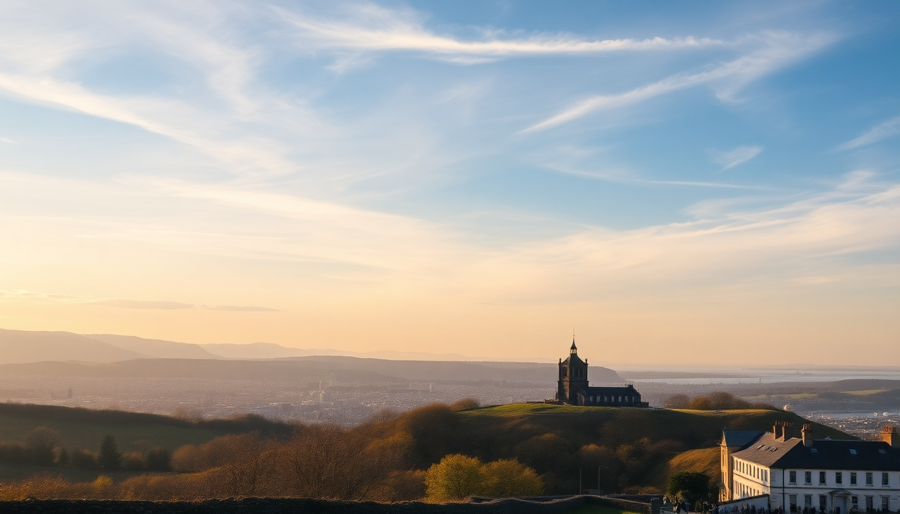

10-Day UK Itinerary: London, Edinburgh & Highlands

We landed at Heathrow with a single carry-on each and a plan that felt ambitious on paper: ten days to hit London, Edinburgh, and the Highlands. No car, no flights between cities—just trains and a whole lot of walking. By the end, we’d learned that the best pub in London is the one you stumble into after a long day, that Edinburgh’s hills are no joke, and that the Highlands don’t care about your schedule. Here’s exactly how we did it, what we’d skip, and what we’d do again in a heartbeat.
Is 10 days enough for London, Edinburgh, and the Highlands?
Yes, but only if you move deliberately. We spent four nights in London, three in Edinburgh, and two in Inverness (with a day trip into the Highlands). The key was booking the LNER train from London King’s Cross to Edinburgh Waverley—4.5 hours, comfortable, and we got breakfast at the station’s M&S Foodhall instead of the overpriced onboard cart. From Edinburgh we took the ScotRail to Inverness (3.5 hours, stunning views after Aviemore). You lose half a day each transfer, but the scenery makes up for it.
- London: 4 nights (3 full days)
- Edinburgh: 3 nights (2 full days)
- Inverness/Highlands: 2 nights (1.5 days)
What should I do in London without feeling rushed?
Start with a walking tour. We booked a free “Royal London” walk through Strawberry Tours that covered Westminster Abbey, Big Ben, and Buckingham Palace in two hours—perfect for orientation. Skip the London Eye (long queues, mediocre view). Instead, book a timed slot for the Sky Garden at 20 Fenchurch Street—it’s free but you need to reserve weeks ahead. For museums, pick one: the British Museum for the Rosetta Stone or the V&A for design. We chose the V&A and spent three hours in the Cast Courts alone.
- Neighborhoods to walk: South Bank (Tate Modern to Tower Bridge), Covent Garden (street performers, Neal’s Yard)
- Food we actually liked: Dishoom Covent Garden (breakfast naan rolls, queue at 8:30 AM), Borough Market (khanom krok from the Thai stall)
- Hotel: We stayed at the Premier Inn London County Hall—basic but unbeatable location, right next to the London Eye. Rooms are small, but you’re not there to hang out.
How do I handle Edinburgh in two days?
Edinburgh is compact but vertical. Day one: Royal Mile from Edinburgh Castle to Holyrood Palace. The castle is worth the entry fee (book online to skip the ticket line), but Holyrood felt skippable unless you’re a monarchy fan. Lunch at The Witchery by the Castle is famous but overpriced—we preferred a quick pie from Oink on Victoria Street. Day two: Arthur’s Seat hike at sunrise (45 minutes up, muddy path, bring water) then the Scotch Whisky Experience for a tasting tour. It’s touristy, but the tasting room at the end is legit.
- Pub recommendation: The Bow Bar on West Bow—proper cask ales, no music, old pub feel
- Accommodation: We booked a room at the Ibis Edinburgh Centre South Bridge—clean, central, and half the price of Royal Mile hotels
- Train tip: The tram from Edinburgh Airport to city center takes 30 minutes and costs £7.50—cheaper than taxis
What’s the best way to see the Highlands from Inverness?
We took a one-day Highland Explorer tour from Inverness that covered Loch Ness, Glencoe, and Fort William. The bus picked us up at 8 AM from Inverness bus station. The highlight was Glencoe—the valley is silent and massive, and our guide pointed out the spot where Skyfall was filmed. Loch Ness felt like a tourist trap (Urquhart Castle ruins are fine, the monster stuff is silly), but the boat cruise was worth it for the views of the hills. Fort William we only saw for lunch—we grabbed fish and chips from The Grog & Gruel, which was solid.
- Tour company: We used Timberbush Tours—small group, driver-guide, about £55 per person
- What to bring: Waterproof jacket (it rained three times in six hours), snacks (lunch stops are limited)
- Skippable: The Jacobite Steam Train (Harry Potter train) costs £60+ and the route is the same as the regular ScotRail to Mallaig for a fraction of the price
How do I get between cities without a car?
Trains. We booked LNER from London to Edinburgh (advance tickets from £35 if you book two weeks ahead on the LNER app). From Edinburgh to Inverness we used ScotRail (advance tickets around £25). No Wi-Fi on the Highland line, so download podcasts. For airport transfers: Heathrow Express is fast (£25, 15 minutes to Paddington) but the Elizabeth Line is cheaper (£13, 40 minutes) and runs to Liverpool Street. We took the Elizabeth Line both ways and had no issues.
- Booking tip: Use Trainline to compare, but book directly on LNER or ScotRail to avoid booking fees
- Luggage: We each had one 40L backpack—no checked bags. The overhead racks on LNER fit them fine
Is the food in the UK really that bad?
No, but you have to know where to look. In London, avoid anything near Leicester Square (overpriced tourist slop). In Edinburgh, skip the haggis at the first shop you see—get it at a proper pub like The Scran & Scallie. Our best meal was at a small Nepalese place in Inverness called The Mustard Seed—lamb curry and a pint of local ale for £18. Breakfasts were consistently good: full English at The Breakfast Club in London, porridge at The Pantry in Edinburgh.
- Don’t miss: A Sunday roast at a pub. We found The Harwood Arms in Fulham (London) and it was worth the booking
- Vegetarian options: Haggis is often vegetarian (made with oats and spices)—try it at least once
FAQ
How much should I budget for 10 days in the UK? We spent about £1,800 per person including trains, accommodation (mid-range hotels), food, and two tours. Excluding flights from the US. London is the biggest expense—budget £150/day for food, transport, and entry fees. Edinburgh and Inverness are cheaper.
Do I need a car for the Highlands? No. We did it without one. Day tours from Inverness cover the main spots (Loch Ness, Glencoe). If you want to drive the North Coast 500, you’d need a car and at least 5 days—not worth it on a 10-day trip.
What’s the best time of year for this itinerary? May or September. June to August is peak tourist season (crowded Edinburgh, expensive London hotels). We went in late May and had mostly dry days. Avoid December—daylight is short (3 PM sunset in Inverness).
Conclusion
- Book trains early: Advance tickets on LNER and ScotRail save you 50-60% versus walk-up fares
- Pack light: You’ll carry your bag up stairs in Edinburgh and through train stations—leave the suitcase at home
- Eat at pubs, not tourist squares: The best meals were in neighborhood gastropubs, not on the Royal Mile
- Skip the London Eye: Sky Garden is free and better. Book ahead
- Give yourself one full day in the Highlands: A day tour from Inverness is enough to see Glencoe and Loch Ness without rushing